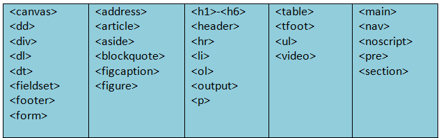

Inline and Block elements
elements are those which only occupy the space bounded by the tags defining the element, instead of breaking the flow of the content.
In this article, we'll examine HTML inline-level elements and how they differ from block-level elements.
